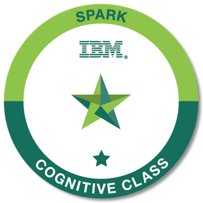
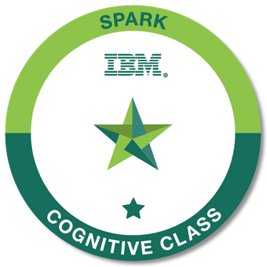

ABOUT ME
- Working as a Software Validation Engineer at Ford Motor Company through Wipro contracting.
- Master's degree in Computer Science - Research Track, class of 2020.
- Experienced with data sciences libraries like Pandas, NumPy, Keras, and Matplotlib.
- Experienced with Python, Java, C++ programming languages, SQL, and Hadoop.
- Experienced with managing terabytes of structured and unstructured metadata and preprocessing the data using NLP.
- Experienced in supporting IT needs for computer labs and Windows NT servers.

 
